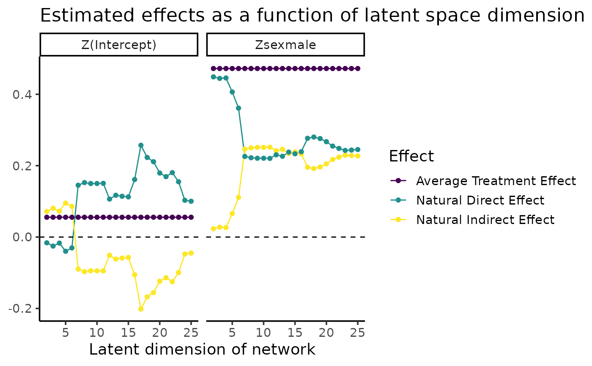
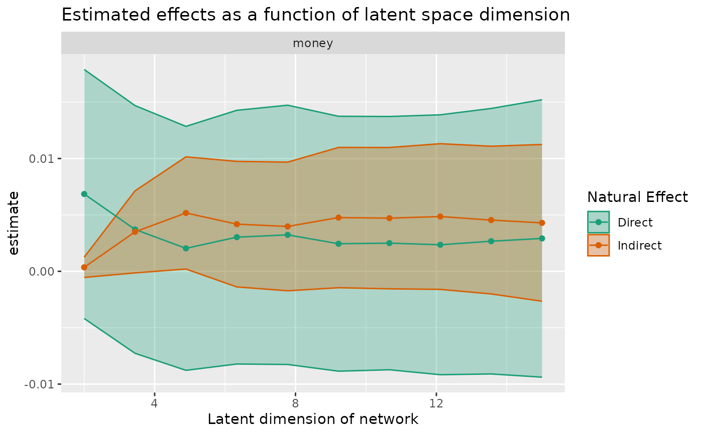

Estimate mediated effects for a variety of embedding dimensions
Source:R/mediation.R
sensitivity_curve.RdEstimate mediated effects for a variety of embedding dimensions
Usage
sensitivity_curve(
graph,
formula,
max_rank,
...,
ranks_to_consider = 10,
coembedding = c("U", "V")
)Arguments
- graph
A
tidygraph::tbl_graph()object.- formula
Details about the nodal design matrix. Of the form outcome ~ nodal_formula. For now, no interactions or fancy stuff are allowed in the formula.
- max_rank
Maximum rank to consider (integer).
- ranks_to_consider
How many distinct ranks to consider (integer). Optional, defaults to 10.
Value
A rank_sensitivity_curve object, which is a subclass of a
tibble::tibble().
Examples
library(tidygraph)
library(dplyr)
#>
#> Attaching package: ‘dplyr’
#> The following objects are masked from ‘package:stats’:
#>
#> filter, lag
#> The following objects are masked from ‘package:base’:
#>
#> intersect, setdiff, setequal, union
data(smoking, package = "latentnetmediate")
# example with fully observed node data
rank_curve <- smoking |>
mutate(
smokes_int = as.integer(smokes) - 1
) |>
sensitivity_curve(
smokes_int ~ sex,
max_rank = 25,
ranks_to_consider = 24,
se_type = "stata"
)
rank_curve
#> term estimand estimate conf.low conf.high rank
#> 1 sexmale nde 0.44882982 0.307436797 0.59022284 2
#> 2 sexmale nie 0.02339241 -0.033318287 0.08010310 2
#> 3 sexmale nde 0.44448122 0.295139721 0.59382272 3
#> 4 sexmale nie 0.02774100 -0.044349111 0.09983112 3
#> 5 sexmale nde 0.44571454 0.295726398 0.59570269 4
#> 6 sexmale nie 0.02650768 -0.046355999 0.09937136 4
#> 7 sexmale nde 0.40650863 0.253379910 0.55963735 5
#> 8 sexmale nie 0.06571359 -0.015830571 0.14725776 5
#> 9 sexmale nde 0.36117004 0.195990809 0.52634926 6
#> 10 sexmale nie 0.11105219 0.011209237 0.21089513 6
#> 11 sexmale nde 0.22585339 0.005527157 0.44617962 7
#> 12 sexmale nie 0.24636883 0.067635152 0.42510252 7
#> 13 sexmale nde 0.23699648 0.013861371 0.46013158 8
#> 14 sexmale nie 0.23522575 0.051043342 0.41940815 8
#> 15 sexmale nde 0.27141798 0.058999619 0.48383634 9
#> 16 sexmale nie 0.20080424 0.023657932 0.37795055 9
#> 17 sexmale nde 0.26311547 0.051155900 0.47507505 10
#> 18 sexmale nie 0.20910675 0.031144110 0.38706938 10
#> 19 sexmale nde 0.25876521 0.044826489 0.47270392 11
#> 20 sexmale nie 0.21345702 0.034441267 0.39247276 11
#> 21 sexmale nde 0.26000608 0.044919411 0.47509275 12
#> 22 sexmale nie 0.21221614 0.032016562 0.39241572 12
#> 23 sexmale nde 0.26164411 0.045996772 0.47729144 13
#> 24 sexmale nie 0.21057811 0.025018131 0.39613810 13
#> 25 sexmale nde 0.25582219 0.037275057 0.47436933 14
#> 26 sexmale nie 0.21640003 0.028819811 0.40398025 14
#> 27 sexmale nde 0.24351687 0.025250536 0.46178319 15
#> 28 sexmale nie 0.22870536 0.040538609 0.41687211 15
#> 29 sexmale nde 0.23883036 0.017668231 0.45999250 16
#> 30 sexmale nie 0.23339186 0.044119369 0.42266435 16
#> 31 sexmale nde 0.24152998 0.019951248 0.46310872 17
#> 32 sexmale nie 0.23069224 0.042882020 0.41850246 17
#> 33 sexmale nde 0.25093142 0.030190117 0.47167273 18
#> 34 sexmale nie 0.22129080 0.031325915 0.41125569 18
#> 35 sexmale nde 0.24629162 0.020270348 0.47231288 19
#> 36 sexmale nie 0.22593061 0.032950505 0.41891071 19
#> 37 sexmale nde 0.24222276 0.013313629 0.47113190 20
#> 38 sexmale nie 0.22999946 0.036070732 0.42392818 20
#> 39 sexmale nde 0.25158329 0.023153797 0.48001277 21
#> 40 sexmale nie 0.22063894 0.028262414 0.41301546 21
#> 41 sexmale nde 0.25138914 0.019299235 0.48347905 22
#> 42 sexmale nie 0.22083308 0.024880934 0.41678523 22
#> 43 sexmale nde 0.25150147 0.018567396 0.48443555 23
#> 44 sexmale nie 0.22072075 0.023878310 0.41756319 23
#> 45 sexmale nde 0.24876867 0.011284657 0.48625268 24
#> 46 sexmale nie 0.22345355 0.018893361 0.42801375 24
#> 47 sexmale nde 0.24513935 0.015088082 0.47519062 25
#> 48 sexmale nie 0.22708287 0.029912916 0.42425283 25
plot(rank_curve)

# example with some missing node data. in this case, all edges are
# used to estimate embeddings, but once the embeddings are in hand,
# the regression only considers complete cases
data(glasgow, package = "latentnetmediate")
glasgow1 <- glasgow[[1]] |>
activate(nodes) |>
filter(selection129) |>
mutate(
smokes_dimaria = as.numeric(tobacco_int > 1)
) |>
activate(edges) |>
filter(friendship != "Structurally missing") |>
activate(nodes)
# verify that there is some missing data, in this case treatment indicators
glasgow1 |>
as_tibble() |>
count(is.na(money))
#> # A tibble: 2 × 2
#> `is.na(money)` n
#> <lgl> <int>
#> 1 FALSE 126
#> 2 TRUE 3
glasgow1 |>
sensitivity_curve(smokes_dimaria ~ money, max_rank = 15, coembedding = "V") |>
plot()
